Perlin Derivatives
Derivatives of Interpolation
- Find derivatives for linear, bilinear, and trilinear interpolation.
- Calculate derivatives for value and Perlin noise.
This is the third tutorial in a series about pseudorandom surfaces. In it we will calculate derivatives of value and Perlin noise.
This tutorial is made with Unity 2020.3.38f1.
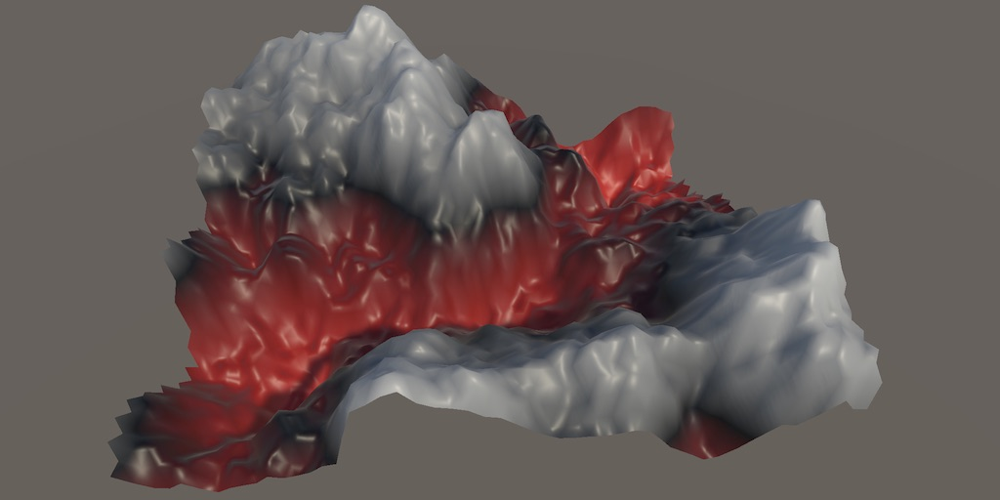
Value Noise
As we did for simplex noise, we begin with value noise, as that means that we can treat the gradients as constant values, simplifying the derivatives. So add options for 1D, 2D, and 3D value noise to ProceduralSurface.
static SurfaceJobScheduleDelegate[,] surfaceJobs = {
{
SurfaceJob<Lattice1D<LatticeNormal, Value>>.ScheduleParallel,
SurfaceJob<Lattice2D<LatticeNormal, Value>>.ScheduleParallel,
SurfaceJob<Lattice3D<LatticeNormal, Value>>.ScheduleParallel
},
…
};
public enum NoiseType {
PerlinValue, Simplex€, SimplexSmoothTurbulence, SimplexValue
}
Lattice Interpolator
We use the function `t(x)=6x^5-15x^4+10x^3` to interpolate between lattice points. We'll need the derivative of that, so add a field for it to LatticeSpan4 named dt.
public struct LatticeSpan4 {
public int4 p0, p1;
public float4 g0, g1;
public float4 t, dt;
}
In section 2.6 of Pseudorandom Noise / Value Noise we already determined that `t'(x)=30x^4-60x^3+30x^2`. Calculate it to both in LatticeNormal and LatticeTiling.
public LatticeSpan4 GetLatticeSpan4 (float4 coordinates, int frequency) {
…
float4 t = coordinates - points;
span.t = t * t * t * (t * (t * 6f - 15f) + 10f);
span.dt = t * t * (t * (t * 30f - 60f) + 30f);
return span;
}
Linear Interpolation
We use the linear interpolation function to transition between lattice points. This function can be mathematically defined as `l(a,b,t)=a(1-t)+bt=a+(b-a)t` where `t` is the variable interpolator. The rate of change of that interpolation is `l'_t(a,b,t)=b-a`.
Our 1D value noise function is `v(x)=l(a,b,t(x))` so by applying the chain rule we find its derivative `v'(x)=(b-a)t'(x)`.
Adjust Lattice1D.GetNoise4 so it stores its gradients in variables and returns an explicit Sample4.
public Sample4 GetNoise4(float4x3 positions, SmallXXHash4 hash, int frequency) {
LatticeSpan4 x = default(L).GetLatticeSpan4(positions.c0, frequency);
var g = default(G);
//return g.EvaluateCombined(lerp(
// g.Evaluate(hash.Eat(x.p0), x.g0).v,
// g.Evaluate(hash.Eat(x.p1), x.g1).v, x.t
//));
Sample4
a = g.Evaluate(hash.Eat(x.p0), x.g0),
b = g.Evaluate(hash.Eat(x.p1), x.g1);
return g.EvaluateCombined(new Sample4 {
v = lerp(a.v, b.v, x.t)
});
}
Then include the derivative calculation.
return g.EvaluateCombined(new Sample4 {
v = lerp(a.v, b.v, x.t),
dx = frequency * (b.v - a.v) * x.dt
});
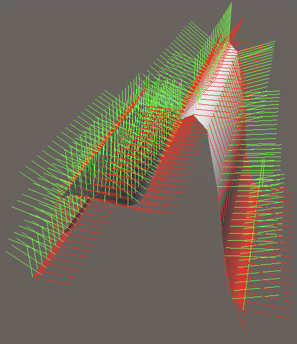
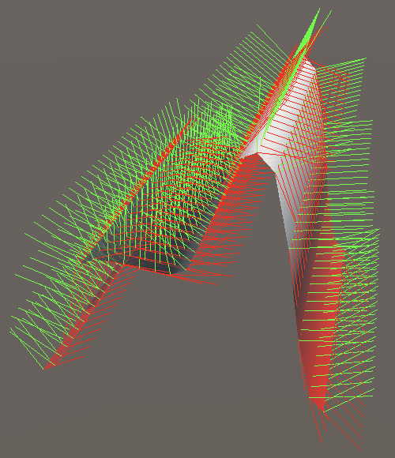
Bilinear Interpolation
For 2D value noise we use bilinear interpolation, so an interpolation of two interpolations. Begin by adjusting Lattice2D.GetNoise4 so it also stores its gradients in variables and returns an explict Sample4.
var g = default(G);
Sample4
a = g.Evaluate(h0.Eat(z.p0), x.g0, z.g0),
b = g.Evaluate(h0.Eat(z.p1), x.g0, z.g1),
c = g.Evaluate(h1.Eat(z.p0), x.g1, z.g0),
d = g.Evaluate(h1.Eat(z.p1), x.g1, z.g1);
return g.EvaluateCombined(new Sample4 {
v = lerp(lerp(a.v, b.v, z.t), lerp(c.v, d.v, z.t), x.t)
});
The function for 2D value noise is `v(x,z)=l(l(a,b,t(z)),l(c,d,t(z)),t(x))`. As this is hard to read let's introduce a variant notation for the interpolation function: `l(a,b,t)-=aoversettrightarrowb`. The arrow operator indicates interpolation from its left to its right operand, with the interpolator written above it. It has priority over addition and subtraction.
Now we can write `v(x,z)=(aoverset(t(z))rightarrowb)overset(t(x))rightarrow(coverset(t(z))rightarrowd)`.
The partial X derivative of that is `v'_x(x,z)=(coverset(t(z))rightarrowd-aoverset(t(z))rightarrowb)t'(x)`, because the interpolations in the Z dimension are constant in this case. Add it to the noise result.
v = lerp(lerp(a.v, b.v, z.t), lerp(c.v, d.v, z.t), x.t), dx = frequency * (lerp(c.v, d.v, z.t) - lerp(a.v, b.v, z.t)) * x.dt
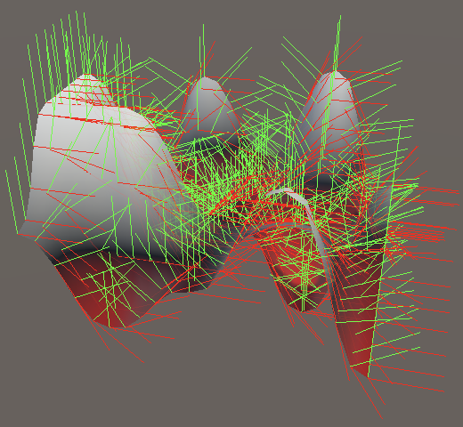
For the partial Z derivative we have two separate Z interpolations of which we take the derivative, and then X interpolate those: `v'_z(x,z)=(b-a)t'(z)overset(t(x))rightarrow(d-c)t'(z)`.
v = lerp(lerp(a.v, b.v, z.t), lerp(c.v, d.v, z.t), x.t), dx = frequency * (lerp(c.v, d.v, z.t) - lerp(a.v, b.v, z.t)) * x.dt, dz = frequency * lerp((b.v - a.v) * z.dt, (d.v - c.v) * z.dt, x.t)
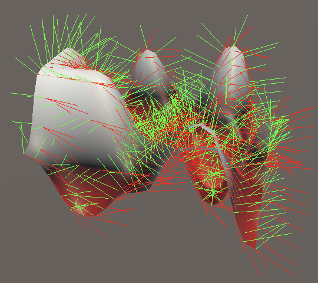
Trilinear Interpolation
For 3D value noise we have to extend this approach to three dimensions. Again begin by adjusting the Lattice3D.GetNoise4 method, as before.
var gradient = default(G);
Sample4
a = gradient.Evaluate(h00.Eat(z.p0), x.g0, y.g0, z.g0),
b = gradient.Evaluate(h00.Eat(z.p1), x.g0, y.g0, z.g1),
c = gradient.Evaluate(h01.Eat(z.p0), x.g0, y.g1, z.g0),
d = gradient.Evaluate(h01.Eat(z.p1), x.g0, y.g1, z.g1),
e = gradient.Evaluate(h10.Eat(z.p0), x.g1, y.g0, z.g0),
f = gradient.Evaluate(h10.Eat(z.p1), x.g1, y.g0, z.g1),
g = gradient.Evaluate(h11.Eat(z.p0), x.g1, y.g1, z.g0),
h = gradient.Evaluate(h11.Eat(z.p1), x.g1, y.g1, z.g1);
return gradient.EvaluateCombined(new Sample4 {
v = lerp(
lerp(lerp(a.v, b.v, z.t), lerp(c.v, d.v, z.t), y.t),
lerp(lerp(e.v, f.v, z.t), lerp(g.v, h.v, z.t), y.t),
x.t
)
});
The entire function can be written as `v(x,y,z)=((aoverset(t(z))rightarrowb)overset(t(y))rightarrow(coverset(t(z))rightarrowd))overset(t(x))rightarrow((eoverset(t(z))rightarrowf)overset(t(y))rightarrow(goverset(t(z))rightarrowh))`.
Its partial X derivative works the same as for 2D noise, except that it is larger: `v'_x(x,y,z)=((eoverset(t(z))rightarrowf)overset(t(y))rightarrow(goverset(t(z))rightarrowh)-(aoverset(t(z))rightarrowb)overset(t(y))rightarrow(coverset(t(z))rightarrowd))t'(x)`.
v = lerp( lerp(lerp(a.v, b.v, z.t), lerp(c.v, d.v, z.t), y.t), lerp(lerp(e.v, f.v, z.t), lerp(g.v, h.v, z.t), y.t), x.t ), dx = frequency * ( lerp(lerp(e.v, f.v, z.t), lerp(g.v, h.v, z.t), y.t) - lerp(lerp(a.v, b.v, z.t), lerp(c.v, d.v, z.t), y.t) ) * x.dt
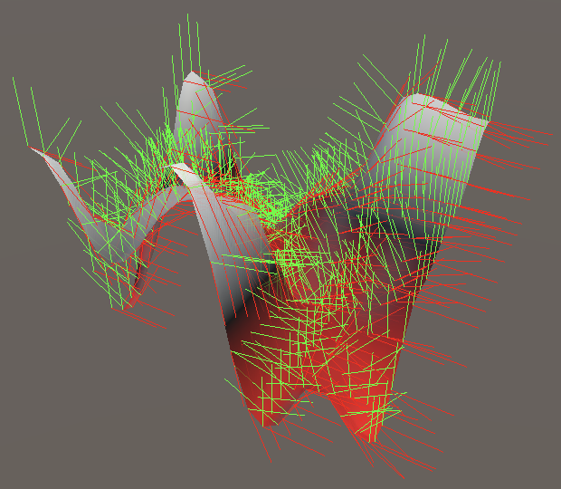
The partial Z derivate also works like the 2D version, except that it goes one level deeper: `v'_z(x,y,z)=((b-a)t'(z)overset(t(y))rightarrow(d-c)t'(z))overset(t(x))rightarrow((f-e)t'(z)overset(t(y))rightarrow(h-g)t'(z))`.
dx = frequency * ( lerp(lerp(e.v, f.v, z.t), lerp(g.v, h.v, z.t), y.t) - lerp(lerp(a.v, b.v, z.t), lerp(c.v, d.v, z.t), y.t) ) * x.dt, dz = frequency * lerp( lerp((b.v - a.v) * z.dt, (d.v - c.v) * z.dt, y.t), lerp((f.v - e.v) * z.dt, (h.v - g.v) * z.dt, y.t), x.t )
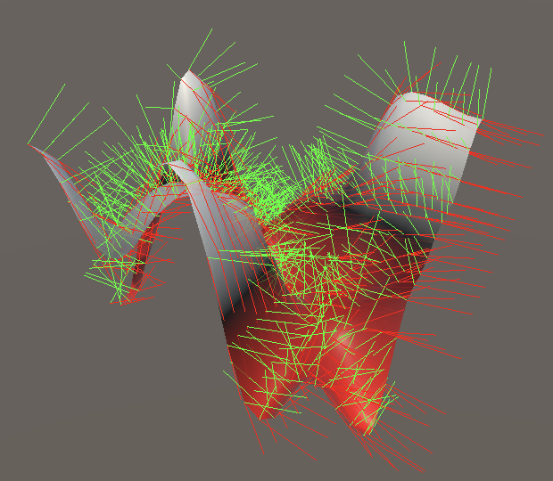
Finally, the partial Y derivative sits in the middle and looks like a mix of the other two derivatives: `v'_y(x,y,z)=(coverset(t(z))rightarrowd-aoverset(t(z))rightarrowb)t'(y)overset(t(x))rightarrow(goverset(t(z))rightarrowh-eoverset(t(z))rightarrowf)t'(y)`.
dx = frequency * ( lerp(lerp(e.v, f.v, z.t), lerp(g.v, h.v, z.t), y.t) - lerp(lerp(a.v, b.v, z.t), lerp(c.v, d.v, z.t), y.t) ) * x.dt, dy = frequency * lerp( (lerp(c.v, d.v, z.t) - lerp(a.v, b.v, z.t)) * y.dt, (lerp(g.v, h.v, z.t) - lerp(e.v, f.v, z.t)) * y.dt, x.t ), dz = frequency * lerp( lerp((b.v - a.v) * z.dt, (d.v - c.v) * z.dt, y.t), lerp((f.v - e.v) * z.dt, (h.v - g.v) * z.dt, y.t), x.t )
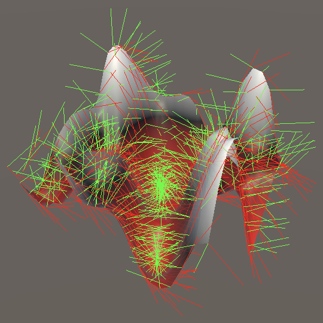
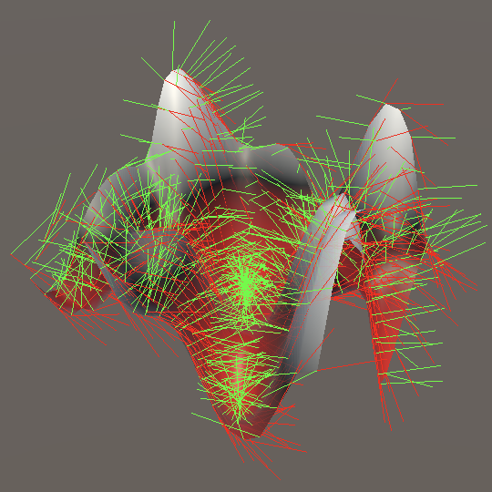
Perlin Noise
Just like with simplex noise, to support Perlin noise we must treat the gradients as functions and thus incorporate them into the derivatives. Add 1D, 2D, and 3D Perlin noise options to ProceduralSurface so that we can see then.
Interpolation with Gradients
static SurfaceJobScheduleDelegate[,] surfaceJobs = {
{
SurfaceJob<Lattice1D<LatticeNormal, Perlin>>.ScheduleParallel,
SurfaceJob<Lattice2D<LatticeNormal, Perlin>>.ScheduleParallel,
SurfaceJob<Lattice3D<LatticeNormal, Perlin>>.ScheduleParallel
},
…
};
public enum NoiseType {
Perlin€, PerlinValue, Simplex€, SimplexSmoothTurbulence, SimplexValue
}
1D Gradients
For 1D Perlin noise we have to use the function `p(x)=a(x)overset(t(x))rightarrowb(x)`. We find its derivative by applying the product rule: `p'(x)=a'(x)overset(t(x))rightarrowb'(x)+(b(x)-a(x))t'(x)`.
Adjust Lattice1D.GetNoise4 by adding the new part to its derivative. Note that if the gradients are constant their derivatives are zero, so the new interpolation would add nothing.
dx = frequency * (lerp(a.dx, b.dx, x.t) + (b.v - a.v) * x.dt)
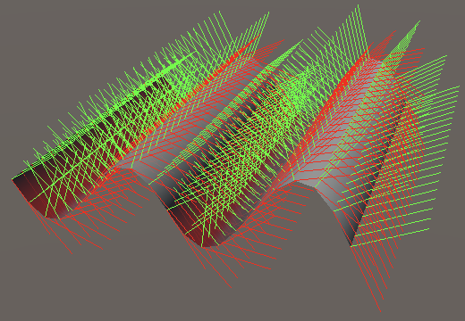
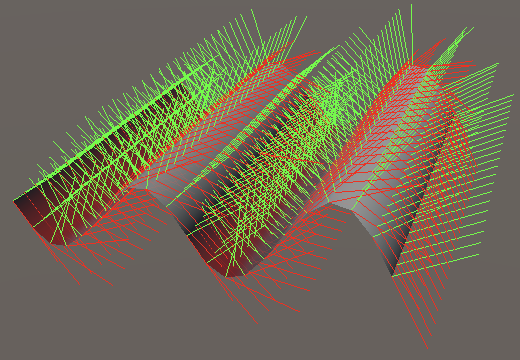
2D Gradients
For 2D noise the partial X derivative changes in the same way, also gaining a interpolation of gradient derivatives: `p'_x(x,z)=(a'_xoverset(t(z))leftrightarrowb'_x)overset(t(x))leftrightarrow(c'_xoverset(t(z))leftrightarrowd'_x)+(coverset(t(z))leftrightarrowd-aoverset(t(z))leftrightarrowb)t'(x)`. Here I omitted the `(x,z)` arguments that all gradients should have. Add the new portion of the derivative to Lattice2D.GetNoise4.
v = lerp(lerp(a.v, b.v, z.t), lerp(c.v, d.v, z.t), x.t), dx = frequency * ( lerp(lerp(a.dx, b.dx, z.t), lerp(c.dx, d.dx, z.t), x.t) + (lerp(c.v, d.v, z.t) - lerp(a.v, b.v, z.t)) * x.dt ),
And the partial Z derivative changes likewise: `p'_z(x,z)=(aoverset(t(z))leftrightarrowb)'_zoverset(t(x))leftrightarrow(coverset(t(z))leftrightarrowd)'_z`. Here I didn't write out the derivatives of the inner interpolations.
dz = frequency * lerp( lerp(a.dz, b.dz, z.t) + (b.v - a.v) * z.dt, lerp(c.dz, d.dz, z.t) + (d.v - c.v) * z.dt, x.t )
To complete the 2D derivatives we must also adjust BaseGradients.Square so it returns its derivatives, like BaseGradients.Circle.
public static Sample4 Square (SmallXXHash4 hash, float4 x, float4 y) {
float4x2 v = SquareVectors(hash);
return new Sample4 {
v = v.c0 * x + v.c1 * y,
dx = v.c0,
dz = v.c1
};
}
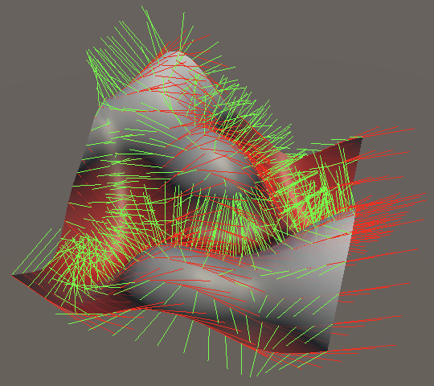
3D Gradients
The changes to 3D noise again follow the same pattern as for 2D. Interpolations of gradient derivatives are added where applicable. First for the partial X derivative.
dx = frequency * ( lerp( lerp(lerp(a.dx, b.dx, z.t), lerp(c.dx, d.dx, z.t), y.t), lerp(lerp(e.dx, f.dx, z.t), lerp(g.dx, h.dx, z.t), y.t), x.t ) + ( lerp(lerp(e.v, f.v, z.t), lerp(g.v, h.v, z.t), y.t) - lerp(lerp(a.v, b.v, z.t), lerp(c.v, d.v, z.t), y.t) ) * x.dt ),
Second for the partial Y derivative.
dy = frequency * lerp( lerp(lerp(a.dy, b.dy, z.t), lerp(c.dy, d.dy, z.t), y.t) + (lerp(c.v, d.v, z.t) - lerp(a.v, b.v, z.t)) * y.dt, lerp(lerp(e.dy, f.dy, z.t), lerp(g.dy, h.dy, z.t), y.t) + (lerp(g.v, h.v, z.t) - lerp(e.v, f.v, z.t)) * y.dt, x.t ),
Third for the partial Z derivative.
dz = frequency * lerp( lerp( lerp(a.dz, b.dz, z.t) + (b.v - a.v) * z.dt, lerp(c.dz, d.dz, z.t) + (d.v - c.v) * z.dt, y.t ), lerp( lerp(e.dz, f.dz, z.t) + (f.v - e.v) * z.dt, lerp(g.dz, h.dz, z.t) + (h.v - g.v) * z.dt, y.t ), x.t )
And finally the inclusion of derivatives in BaseGradients.Octahedron.
public static Sample4 Octahedron (
SmallXXHash4 hash, float4 x, float4 y, float4 z
) {
float4x3 v = OctahedronVectors(hash);
return new Sample4 {
v = v.c0 * x + v.c1 * y + v.c2 * z,
dx = v.c0,
dy = v.c1,
dz = v.c2
};
}
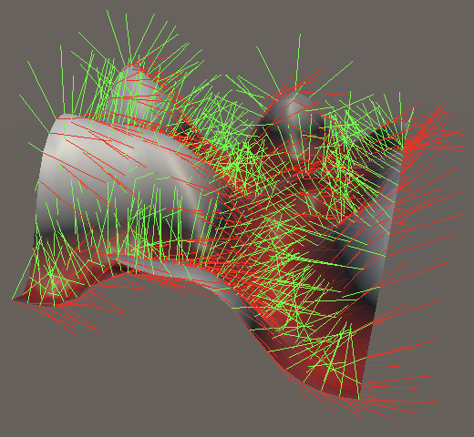
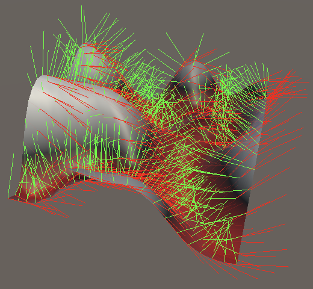
Turbulence
We wrap up this tutorial with the inclusion of smooth turbulence variants of Perlin noise.
static SurfaceJobScheduleDelegate[,] surfaceJobs = {
{
SurfaceJob<Lattice1D<LatticeNormal, Perlin>>.ScheduleParallel,
SurfaceJob<Lattice2D<LatticeNormal, Perlin>>.ScheduleParallel,
SurfaceJob<Lattice3D<LatticeNormal, Perlin>>.ScheduleParallel
},
{
SurfaceJob<Lattice1D<LatticeNormal, Smoothstep<Turbulence<Perlin>>>>
.ScheduleParallel,
SurfaceJob<Lattice2D<LatticeNormal, Smoothstep<Turbulence<Perlin>>>>
.ScheduleParallel,
SurfaceJob<Lattice3D<LatticeNormal, Smoothstep<Turbulence<Perlin>>>>
.ScheduleParallel
},
…
};
public enum NoiseType {
Perlin€, PerlinSmoothTurbulence, PerlinValue,
Simplex€, SimplexSmoothTurbulence, SimplexValue
}
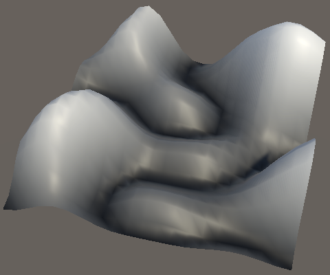
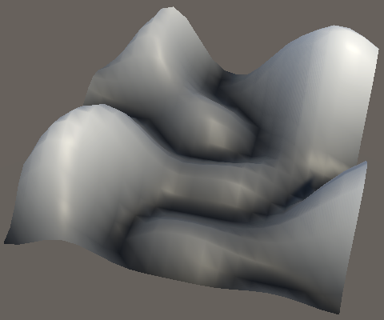
The next tutorial is Voronoi Derivatives.